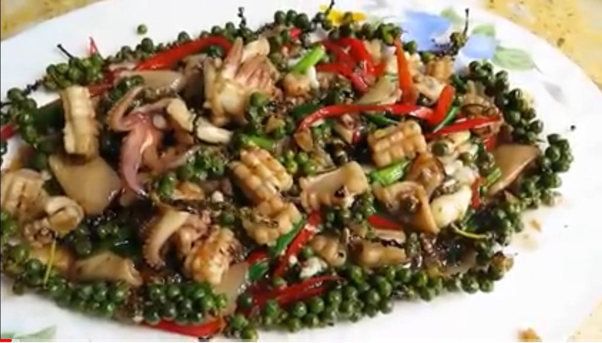
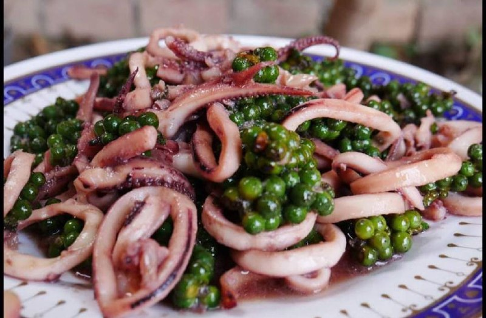
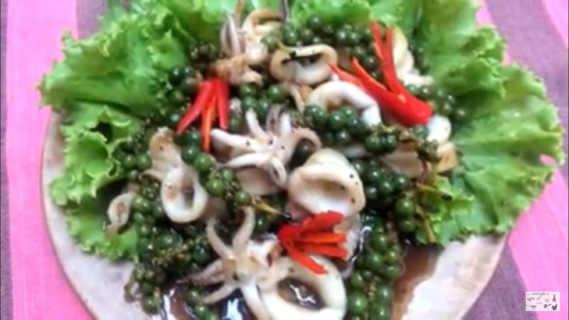

Back
😋មឹកឆាអំបិលម្រេច😋



- គ្រឿងផ្សំ
- មឹកបន្ទះធំៗស្រស់ល្អកន្លះគីឡូ ប្រេងឆា៣ស្រាបព្រា ខ្ទឹមស៤ដំុធំបកសំបក
- ចិញ្រ្ចាំឲ្យម៉ដ្ឋ ស្ករកន្លះស្លាបព្រាកាហ្វេ ម្រេចម៉ដ្ឋ១ស្លាបព្រាកាហ្វេ អំបិលា២ស្លាបព្រាកាហ្វេ
- សាលាដ១៥ក្រាម ប៉េងប៉ោះហាវៃ១០០ក្រាម ក្រូចឆ្មា២-3ចំណិត ទឹកក្រូចឆ្មា២ស្លាបព្រាកាហ្វេ។
- វីធីធ្វើ
ហាន់មឹកប៉ុន១ថ្នាំងដៃ
- លាយបញ្ចូលគ្នា មឹក ប្រេងឆា ខ្ទឹមស ស្ករ និងអំបិលកន្លះស្លាបព្រានិងម្រេច គ្របទុកឲ្យត្រជាក់២០នាទី។ រៀបសាលាដ ប៉េងប៉ោះលើចានសំប៉ែតធំ។
- កម្តៅខ្ទះឲ្យក្ដៅ ហើយឆាមឹកដែលលាយគ្រឿងចូលគ្នារួចនោះដោយកម្តៅភ្លើងក្ដៅបំផុត ឆាប្រែចុះប្រែឡើង១-២នាទី ឫរហូតទាល់តែមឹកប្រែពណ៌សបន្ដិច
រួចរក្សាខ្ទះឲ្យក្ដៅខ្លាំងដដែល តែកុំចម្អិនមឹកយូរពេកឫរហូតដល់ក្រៀម។
- ចាក់ទឹកក្រូចឆ្មាចូល អំបិល ម្រេច ដែលនៅសល់រោយពីលើជាការស្រេច។